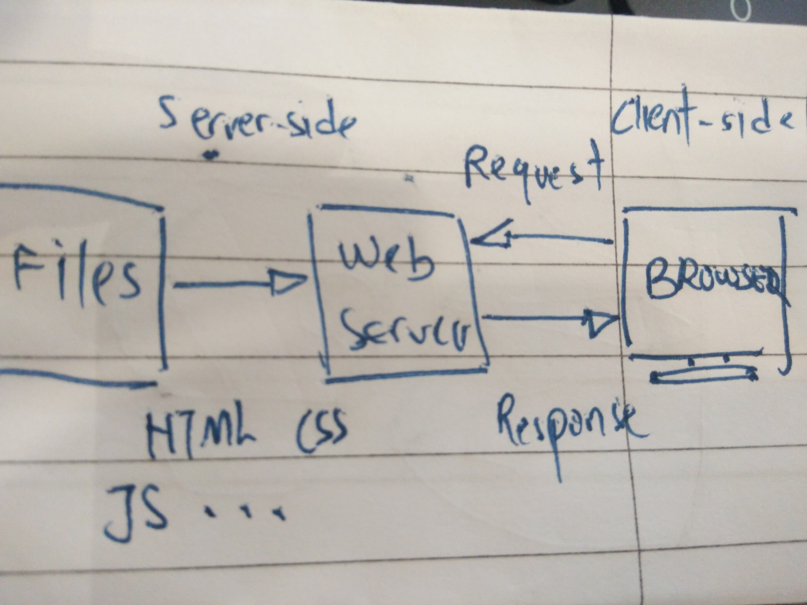
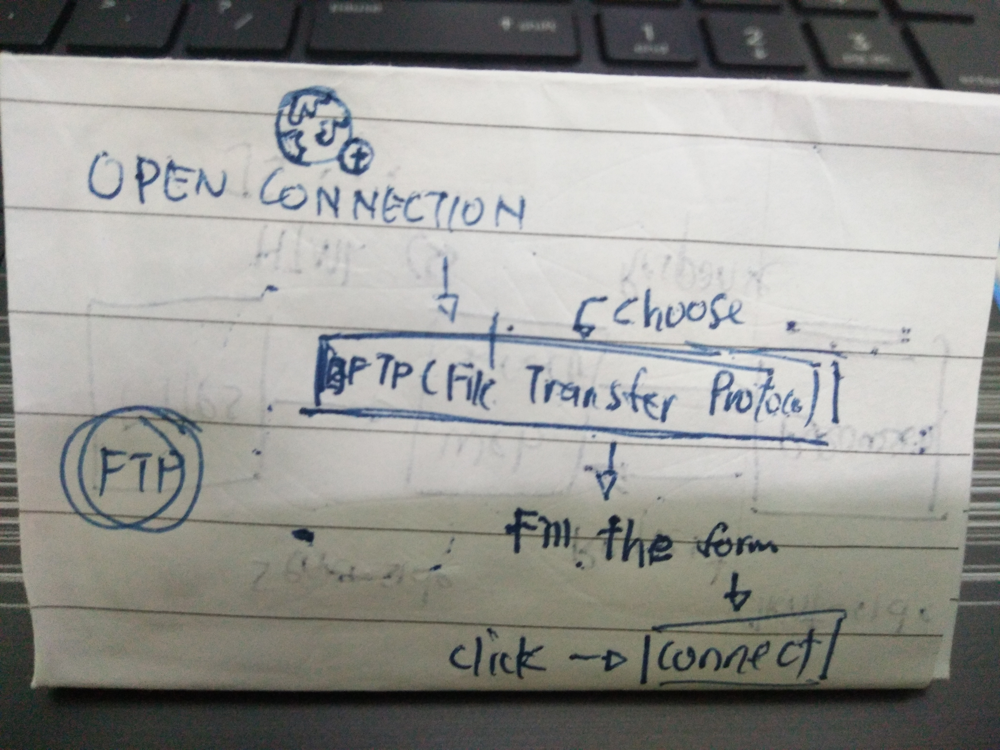
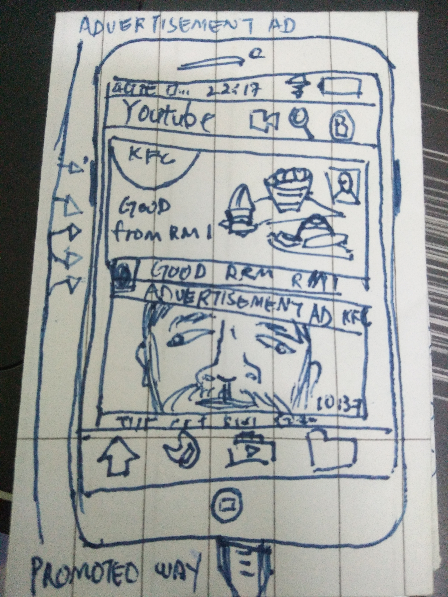

The behaviours of web server and interaction with browser is when user want to navigate an url for search webpage, the browser will broke the url to 3 part, protocol(http), server name and (.com) after that, the browser will communicated with the name server to translate the server name in to IP address which uses to connect to server machine, the browser formed a connection to server and follow the HTTP protocol, browser will send a GET request to server asking for the file that user need, server will elaborate the request and send the HTML text for the Webpage to browser so the browser would read the HTML tags and formatted.
The tool used to deploy and update a web site today is FileZilla, a standard tool for copying, upload, modify files from computer to another across the Internet, it's similar with GIT. We can also use FileZilla for deploy website, for caching files, debugging or creating websites.
The way for web sites promoted is Search engine optimization (SEO), it's the process of affecting the visibility of a website, the results—often will referred to "natural", "organic", or "earned" results. Next, content of writing, because it through online advertisments, articles and other medias. Then, it can boost up our web sites, it need accuracy, language and innovative idea to enhance rapid development. After that, we could usedsocial platforms to distribute content, manage comments and feedback with polite and well or create ripples to pust out our content.
